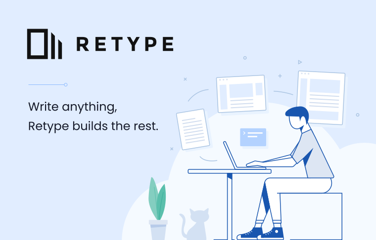

#
Welcome to Retype 😄
Retype is an ✨ ultra-high-performance-magical ✨ generator that builds a website based on simple text files. Focus on your writing while Retype builds the rest.

No coding is required and just one Markdown file, such as a README.md, will get you started.
The retype.com website was generated using Retype. View the source used to generate this very page.
A new Retype powered website can be up and running within seconds once Retype is installed, which itself takes only a few seconds. 👍
Retype can also build amazing reference documentation based upon your projects source code. TypeScript and C# projects are supported (JavaScript next), with plans for many more languages in the future.
Point Retype at a TypeScript or C# project, and reference documentation will be generated based on your library's source code, code comments, and metadata.
#
Quick start
You can install Retype using npm, yarn, or the dotnet CLI.
Choose one of the following lines and run within your local Command line or Terminal:
# npm
npm install --global retypeapp
# Yarn
yarn global add retypeapp
# dotnet
dotnet tool install --global retypeappNext, from your command line, navigate to a folder location where you have one or more Markdown .md files, then run the following commands.
retype init
retype build
retype runThat's it! Your new Retype website should be up and running.
You will require either npm, Yarn, or the dotnet CLI to be installed before installing Retype. Only one of those three is required, although all three could be installed on your machine too. It's up to you. 🙌
All operating systems are supported, including Mac, Windows, and Linux.
#
Features
#
🎉 It just works
Retype has been built to be easy to use and should "just work" out-of-the-box without any special configuration or troublesome setup.
#
⚡ Lightning fast
Don't blink. Retype was built for speed.
#
✅ Easy install
Installation takes only a few seconds. Then you need at least one Markdown .md file which Retype will start building a new website from.
#
💪 Powerful
Project level configuration using retype.json unlocks many more Retype features and customization.
#
✏️ Simple formatting
Pages are formatted using Markdown syntax. Page level configuration is available, such as customizing the navigation label or description used by search engines.
#
💻 Host anywhere
Retype generates a basic HTML website that you can host on any web hosting service, such as gh-pages by GitHub. No special server-side software or external dependencies are required. You can host your Retype site as a public website or as a private website inside your organization.
#
Support
Technical support questions are best asked in the Discussions. The discussions are monitored 24 hours a day and we will do our best to assist.
If you find a defect or would like to submit a feature request, please create an Issue and we will investigate right away.